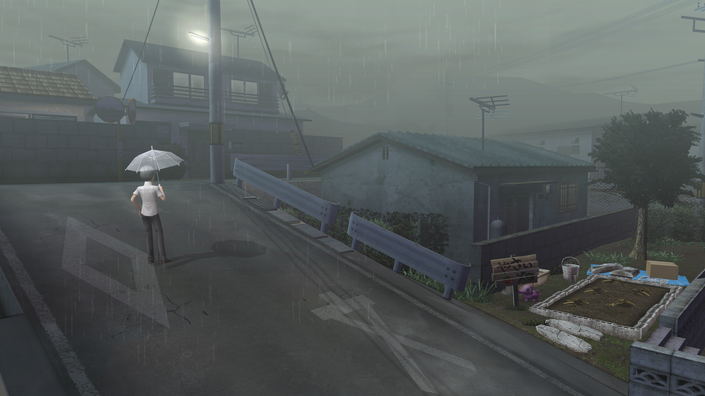

Avisos Oficiales y Rumores

Alerta Meteorológica: Niebla Espesa
El departamento de meteorología advierte sobre bancos de niebla extremadamente densa tras los días de lluvia continua. Se recomienda a los ciudadanos no salir de sus casas por la noche debido a la nula visibilidad.
23 de Octubre. La secundaria Yasogami abrirá sus puertas para su festival anual. Habrá un certamen de belleza (con reglas cuestionables este año) y puestos de comida organizados por los estudiantes. ¡No faltes a la posada improvisada del Grupo 2-2!
Los estudiantes locales no paran de hablar del Canal de Medianoche. Se dice que si mirás la pantalla de un televisor apagado a la medianoche exacta durante una noche de lluvia, vas a ver a tu alma gemela. La policía desmiente cualquier relación entre este rumor urbano y los recientes incidentes.